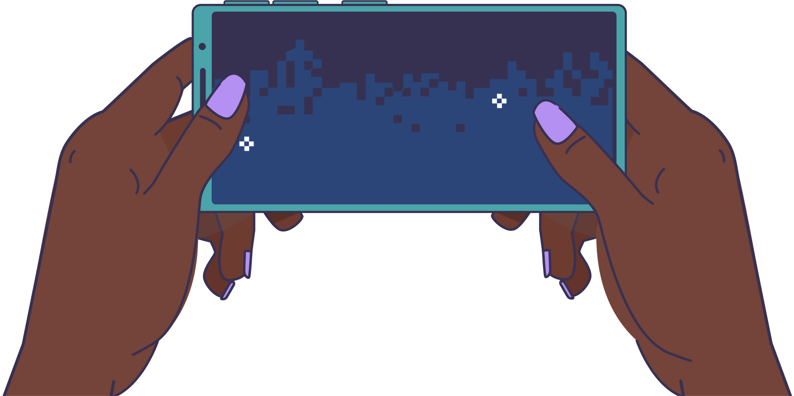
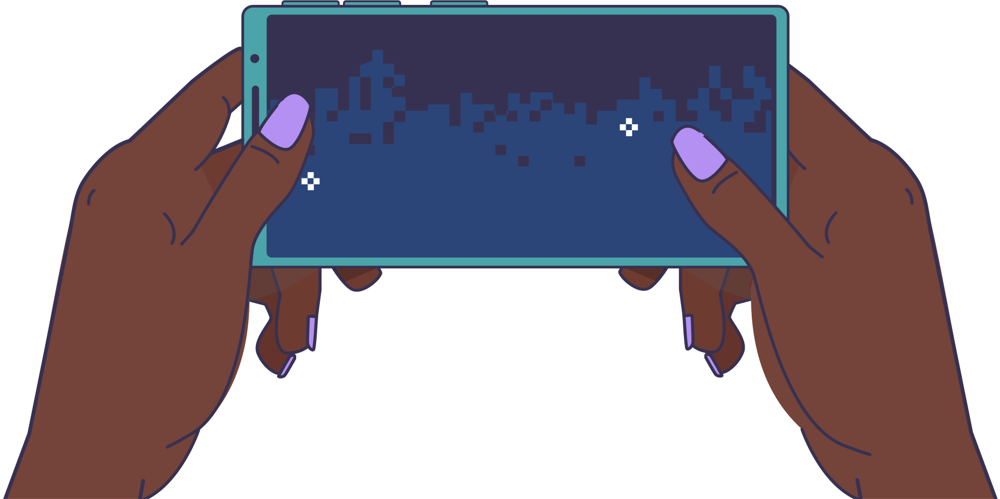

Cami (14 a√±os) y Sebas (19 a√±os) se encontraron en l√≠nea y desde entonces no han dejado de conectarse! üéÆ √âl la agreg√≥ como amiga y comenzaron a jugar juntos todos los d√≠as. üí´‚ú®
Cami (14 a√±os) y Sebas (19 a√±os) se encontraron en l√≠nea y desde entonces no han dejado de conectarse! üéÆ √âl la agreg√≥ como amiga y comenzaron a jugar juntos todos los d√≠as. üí´‚ú®

 



¡Sebas sorprendi√≥ a Cami dentro del juego con el regalo que siempre so√±√≥: ¡gemas doradas! üíé‚ú® Ella siempre hab√≠a deseado tenerlas, pero no ten√≠a dinero para comprarlas. ü§©
¡Con los d√≠as, Sebas le pidi√≥ el n√∫mero de tel√©fono a Cami y comenzaron a hablar por WhatsApp! üì± La conexi√≥n que ten√≠an en el juego se extendi√≥ m√°s all√° de la pantalla, y la diversi√≥n continu√≥ en cada mensaje que compart√≠an üåü


Cami y Sebas tenían una relación a distancia. Sebas constantemente le pedía fotos
Cada vez que discutían por las fotos, Sebas le dejaba de hablar por varios días y tampoco le
enviaba regalos en el juego.
Al final, Cami accedió... Aunque no se sentía cómoda.